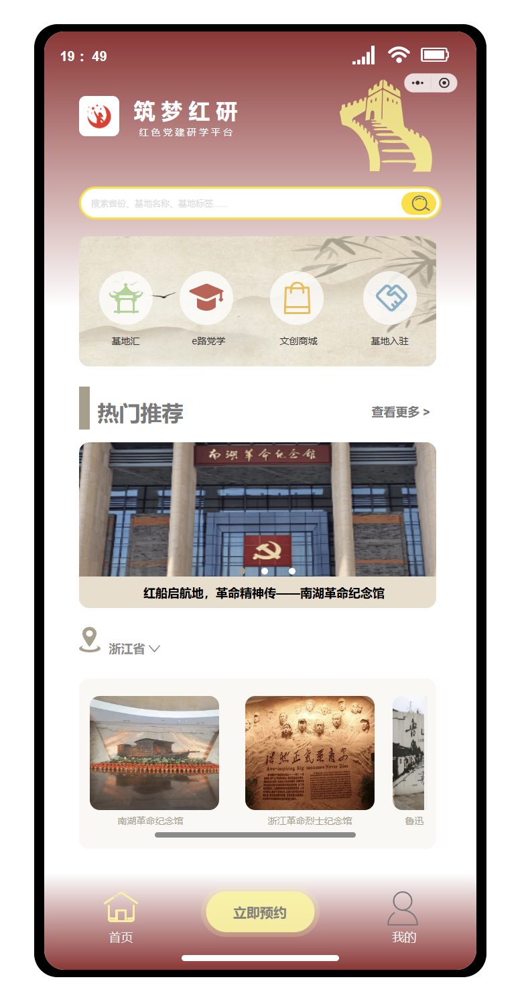
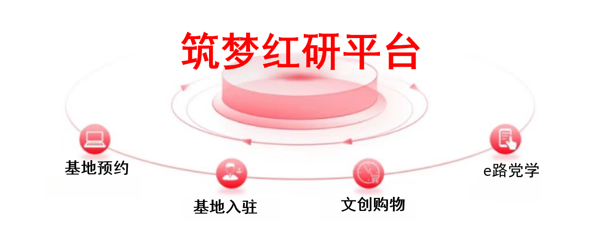

用户侧：找得到、约得上
基层党组织和研学组织者面对基地信息分散、宣传口径不统一、预约流程割裂等问题，前期筛选和沟通成本偏高。
产品策划与运营方案
围绕基层党组织研学活动中“找基地难、预约流程散、活动后留存弱”的问题，设计一个集基地展示、活动预约、学习内容与文创激励于一体的研学服务平台。

这个项目不是单纯的旅游预约工具，而是一个典型的双边平台：用户需要更低决策成本，基地需要曝光和转化，平台需要形成稳定服务闭环。
基层党组织和研学组织者面对基地信息分散、宣传口径不统一、预约流程割裂等问题，前期筛选和沟通成本偏高。
中小红色教育基地缺少稳定展示入口，活动、路线、服务、文创商品难以集中呈现，资源利用出现“冷热不均”。
活动结束后如果没有学习记录、评价反馈和激励机制，研学行为很容易停留在一次性参观，难以形成持续运营。
我将原始功能重组为“发现—预约—参与—评价—激励—复访”的链路，让产品价值从功能罗列变成可理解的用户旅程。
前端降低用户决策成本，中台用审核和预约保障履约，后端通过评价、红星币和文创商城承接活动后的留存与转化。
我将材料中的基地推荐、基地预约、e 路党学、文创商品、基地入驻，统一转译为用户问题和业务价值。
解决“不知道选哪个基地”的问题，通过热度、距离、星级和偏好降低筛选成本，提高预约转化。
把日期选择、信息填写、审核确认和活动报名标准化，减少线下沟通成本，提高履约效率。
承接活动前后的内容学习，让红色文化从一次参观延展为持续学习场景，增加内容停留。
活动完成后通过红星币和文创兑换延长互动链路，为基地提供商品展示和二次转化入口。
用标准化模板帮助中小基地补齐资料、路线、活动与服务信息，扩大供给池，改善资源冷热不均。
产品功能上线后，真正的难点是让平台持续运转。因此我把运营动作拆成供给建设、预约转化和活动后留存。
引入红色教育基地、纪念馆、博物馆等资源；为基地提供入驻模板，帮助补齐展示材料、路线介绍、活动说明和服务信息。
设计“初心教育路线”“青年干部培训路线”“周末红色研学路线”等专题，把基地内容包装成更容易决策的活动方案。
通过学习记录、研学足迹、评价反馈、红星币和文创兑换，把一次性研学沉淀为持续学习和复访行为。
不写没有来源的漂亮数字，而是明确每个阶段应该看什么指标，让方案从“能讲清楚”进一步变成“能验证效果”。
入驻基地数、基地资料完整率、活动发布数
详情页点击率、预约提交率、预约完成率
活动到场率、活动完成率、服务评价率
红星币兑换率、二次预约率、内容学习完成率
热门路线转化率、中小基地曝光占比

这个项目最有价值的地方，不是功能数量，而是能展示我如何从角色、问题、路径、运营和指标五个角度思考一个平台。
用于提升基地推荐效率，让用户更快找到匹配的研学资源。
用于增强文创兑换和交易记录的可信度，服务产品体验。
支持基地入驻、活动审核、评价反馈和用户管理。